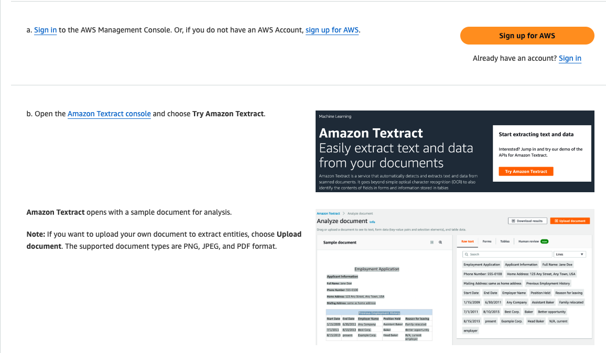

Getting Started
Amazon Textract is a machine learning (ML) service that automatically extracts text, handwriting, layout elements, and data from scanned documents.

Using Textract
- Upload document: Upload the image or PDF file you want to extract text from to an S3 bucket.
- Start job: Start a Textract job by providing the S3 location of the document and specifying the desired output format.
- Get results: Once the job completes, retrieve the extracted text and data from the specified S3 output location.